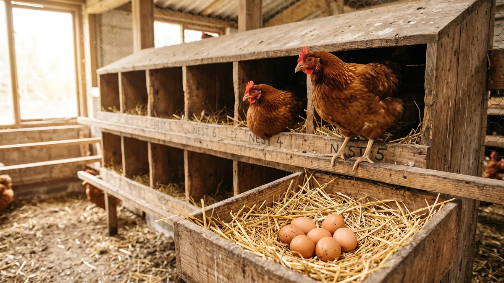

Folluk tasarımı ve yer yumurtasını önleme
Yumurtanın yarısını yerden, tozdan, gübreden topluyorsan mesele tavukta değil, folluğunda. Doğru yuva ölçüsü, sayısı ve yeriyle yumurtayı temiz ve tek yerde toplamanın yolu.

Sabah kümese giriyorsun, folluklar boş ama yer yer altlığın üstünde, köşede, suluğun dibinde bir avuç yumurta. Kimi gübreye bulanmış, kimi ayak altında çatlamış, birini tavuk çoktan gagalamış. Bu manzarayı köye dönüp yumurta işine girenlerin neredeyse hepsi bir kış görür. Sonra da suçu tavuğa atar. Oysa yer yumurtası neredeyse her zaman folluğun bir mesajıdır: ya azdır, ya yanlış yerdedir, ya da tavuğun içine girmeye üşendiği kadar rahatsızdır. Yumurtayı yerden toplamak sadece emek değil; kirli kabuk, çatlak, gagalama ve para kaybı demektir.
Tavuk aslında yumurtasını gizli, loş, sakin bir köşede bırakmak ister. Bu içgüdü yabani atasından kalma. Doğru folluğu kurarsan tavuk zaten oraya koşar; yanlış kurarsan içgüdüsü onu kümesin en karanlık köşesine, çoğu zaman senin göremediğin bir yere iter. İş, o içgüdüyü folluğun içine çekmekte.
Folluk sayısı: kaç tavuğa bir göz gerekir?
En sık yapılan hata folluğu az koymaktır. Kural basit: 4-5 tavuğa 1 folluk gözü. Yani 100 tavuğa 20-25 göz. Sabahın belli bir saatinde bütün sürü aynı anda yumurtlamak ister; folluk yetmezse tavuk sıra bekleyecek değil, en yakın köşeye bırakıp gider. Az folluk, doğrudan yer yumurtasını çoğaltır.
Bir de tavuk taklitçidir. Popüler bir gözü herkes ister, yandaki boş dururken üç tavuk aynı göze tıkışır, sonra biri sıkışıp yumurtasını dışarı atar. O yüzden sayı kadar dağılım da önemli. Aşağıdaki tablo sürü büyüklüğüne göre kaba bir folluk planı:
| Tavuk sayısı | Gereken folluk gözü (4-5 tavuk/göz) | Pratik öneri |
|---|---|---|
| 25 tavuk | 5-6 göz | Tek sıra ahşap folluk yeter |
| 100 tavuk | 20-25 göz | İki-üç noktaya dağıt, tek duvara yığma |
| 250 tavuk | 50-60 göz | İki katlı folluk düşün, alanı koru |
| 500 tavuk | 100-120 göz ya da rollaway sıra | Eğimli (rollaway) sisteme geçmenin tam sırası |
Sayıyı tutturmak tek başına yetmez; folluk gözünün kapasiteni zorlamaması gerekir. Barınakta tavuk başına düşen alanı da sıkıştırıyorsan folluk kavgası büyür. O hesabı tavuk başına kaç metrekare gerekir yazısında ayrıntılı işledim; folluk planını oradaki alan hesabıyla birlikte kur.
Folluk ölçüleri: ideal yuva ne kadar olmalı?
Folluk ne kadar büyük olursa iyi değildir; fazla geniş göze iki tavuk girer, kavga çıkar, yumurta ezilir. Yumurtacı tavuk için oturmuş tavuk folluk ölçüleri şöyledir: yaklaşık 30 cm genişlik, 30 cm derinlik, 35 cm yükseklik. Tavuk içeri girip rahatça dönebilmeli ama sadece kendine yetecek kadar. Lohman, Isa Brown gibi iri kahverengi yumurtacılarda göz genişliğini 32-35 cm'e çıkarabilirsin.
Folluğun ağzına 8-10 cm yükseklikte bir eşik (bariyer) koy; bu hem altlığın dışarı saçılmasını hem yumurtanın yuvarlanıp çıkmasını engeller. Tabanı da tam yere değil, altlıktan 40-60 cm yükseğe kur. Yerden yüksek folluk tavuğa daha güvenli gelir, farenin ve nemin ulaşması zorlaşır. Ama 90 cm'i geçme; tavuk uçarak inip kalkarken yumurtayı çatlatır, üşengeç sürü de o kadar yükseğe hiç çıkmaz.
Folluk nereye konur? Karanlık, loş ve sakin köşe
Folluğun yeri, ölçüsünden bile önemli olabilir. Tavuk yumurtlarken kendini savunmasız hisseder; parlak, gelip geçenin çok olduğu, gürültülü bir yerde folluğa girmez. Kuralları saha diliyle sıralayayım:
- Loş olacak. Folluğun içi kümesin en karanlık, en gölge yeri olmalı. İçi aydınlıksa üstüne perde, çuval ya da tahta kapak koy. Karanlık göz, tavuğu içine çeker.
- Kapı ve pencere hattından uzak. Giriş kapısının, yemliğin ve suluğun tam karşısına folluk koyma. Kalabalığın az olduğu duvar dibi en iyisidir.
- Tünekten alçak dursun. Follukları gece tünediği yerden biraz alçağa yerleştir. Yoksa tavuk follukta tüner, içine pisler ve sabah yumurtalar gübreye bulanır.
- Rüzgâr ve nem almasın. Follukları hava akımının vurduğu, tavanın damladığı duvara kurma. Nemli folluk hem küf hem kirli yumurta demektir; havalandırma dengesini kümes havalandırması yazısından gözden geçir.
Yumuşak altlık: temiz yumurtanın yarısı burada
Folluğun tabanı sert ve çıplaksa yumurta düştüğü an çatlar; altlık yoksa kirlenir. Gözün içine 5-8 cm kalınlığında yumuşak bir altlık ser. En çok kullanılanlar:
- Talaş (rendelenmiş, tozsuz): Yumurtayı iyi yastıklar, nemi çeker. En yaygın ve pratik seçenek.
- Saman / kuru ot: Ucuz ve bol, tavuk kurcalamayı sever. Ancak daha çabuk kirlenir, sık tazelemek gerekir.
- Folluk pedi (astar): Kauçuk ya da keçe folluk pedleri yıkanabilir, uzun ömürlüdür, rollaway sistemle çok uyumludur.
Altlığı haftada en az bir tazele, kirlenen gözü hemen temizle. Bir tavuk kirli follukta yumurtlarsa ötekiler de oraya girmekten kaçınır ve yine yere kayarlar. Genel altlık yönetimini kümes zemininden ayrı düşünme; ikisini birlikte kümes altlığı yönetimi yazısında topladım.
Eğimli (rollaway) folluk: yumurta kirlenmeden yuvarlansın
Sürü büyüdükçe temiz yumurta toplamanın en akıllı yolu eğimli, yani rollaway folluktur. Mantığı basit: folluğun tabanı öne doğru hafif eğimlidir (yaklaşık 7-10 derece). Tavuk yumurtladığı an yumurta yavaşça öne yuvarlanır, tavuğun altından çıkıp önündeki üstü kapalı bir toplama oluğuna iner. Böylece tavuk yumurtaya basamaz, gagalayamaz, üstüne pisleyemez.
Faydası saha diliyle üç kalemde toplanır: yumurta neredeyse hiç kirlenmez, çatlak oranı ciddi düşer ve yumurta gagalama (yumurta yeme) alışkanlığı büyük oranda önlenir. 200 tavuğu geçtiğinde temizlik ve toplama işçiliği rollaway ile yarıya iner. Kurulumu biraz daha maliyetli ama orta ölçekte kendini hızla amorti eder. Yumurta yeme derdi başladıysa konuyu tavuklarda gagalama ve kanibalizm yazısıyla birlikte oku; rollaway folluk o sorunun en etkili çarelerinden biridir.
Yer yumurtasının nedenleri ve önleme
Gelelim asıl derde. Yer yumurtası önleme işinin sırrı, folluğu tavuk için yerden daha cazip hale getirmekte. Nedenleri ve pratik çareleri şöyle sıralayalım:
| Neden | Çözüm |
|---|---|
| Folluk sayısı yetersiz | 4-5 tavuğa 1 göz kuralına çık, dağıt |
| Folluk çok aydınlık / açık | İçini karart, perde-kapak tak |
| Kümesin köşeleri karanlık ve cazip | Köşeleri aydınlat, oraya tünek/engel koy |
| Genç sürü folluğu tanımıyor | Yumurtlamadan önce folluğu aç, sahte (plastik) yumurta koy |
| Folluk kirli veya nemli | Altlığı tazele, gözü temizle |
| Kuluçkaya yatan tavuk gözü işgal ediyor | Gurk tavuğu ayır, gözü boşalt |
Birkaç noktayı açayım. Follukları erken aç. Yarka ilk yumurtasını vermeden 1-2 hafta önce follukları hazır et ve içine plastik ya da tebeşirden birer sahte yumurta koy. Tavuk "burası yumurtlanacak yer" diye öğrenir. Bu alışkanlık ilk günden oturursa yer yumurtası neredeyse hiç başlamaz. Yarkanın ilk haftalarını yarka alırken dikkat edilecekler yazısında anlattım; folluk eğitimi o dönemin bir parçası.
Karanlık köşeleri karart derken tersini yap: tavuğun yumurtlamak için kaçtığı köşe folluktan daha loşsa oraya gider. O köşeyi aydınlat, ışığı ver, hatta fiziksel olarak bir engel, bir tünek, bir kova koy ki oturamasın. Böylece follukları tek loş nokta bırakırsın. Akşam yumurtaları geç toplama alışkanlığından vazgeç; günde en az 2-3 kez topla, özellikle öğlene kadar sık uğra. Yerde kalan bir yumurta ötekilere "burası da olur" sinyali verir ve alışkanlık büyür.
Kuluçkaya yatan (gurk) tavuğu mutlaka çıkar. Bir tavuk folluğa yatıp kalkmıyorsa hem o gözü tıkar hem altına biriken yumurtaları kirletir, hem de öteki tavukları yerden yumurtlamaya iter. Gurk tavuğu ayrı, serin, ışıklı bir bölmeye al; kuluçka niyetin yoksa kırması için birkaç gün ayrı tut. Damızlık ve kuluçka planın varsa konuyu kuluçka makinesiyle civciv çıkarma yazısından yürüt, gurk tavuğu makineyle değerlendir.
Barınak follukları da belirler
Şunu saha tecrübesiyle söyleyeyim: yalıtımsız, yazın kavuran kışın donduran bir barınakta folluğu ne kadar iyi kursan da sonuç istikrarsız olur. Yazın çatı altı 40 dereceyi bulunca tavuk sıcak follukta durmaz, serin toprak köşeye kaçıp oraya bırakır. Kışın folluğun bulunduğu duvar buz gibiyse ve tavan damlıyorsa nem yumurtayı kirletir, tavuk soğuk göze girmez. Yani folluk düzeninin bir ayağı hep barınağın kendisindedir; sabit sıcaklık, kuru hava ve sakin bir iç ortam olmadan temiz yumurta zor.

500 Tavukluk Tavuk Çadırı
Yer yumurtasıyla boğuşup temiz yumurta almak isteyen 400-600'lük sürüler için 500 tavukluk 3-4 kat yalıtımlı brandalı çadır, folluğun içini yazın serin kışın kuru tutar; tavuk gözden kaçmaz, yumurta temiz kalır.
Çadır kümesin folluk bölgesini nasıl dengede tuttuğunu, betona göre kurulum ve maliyet farkını merak ediyorsan kümes maliyeti: betonarme mi çadır mı karşılaştırmasına bak. 500'lük ölçekte işin bütününü kafanda oturtmak istersen 500 tavukla yumurta işine başlamak yol haritası folluk planını da içine oturtur.
Kirli ve çatlak yumurtayı azaltmanın kısa yolu
Temiz yumurta hem satışta fiyat kazandırır hem de yıkama derdinden kurtarır (yıkanan yumurtanın doğal koruma zarı bozulur, çabuk bayatlar). Kirli ve çatlak oranını düşürmek için pratikte işe yarayanlar:
- Follukta gece tünemeyi engelle; folluğu tünekten alçak tut, gece follukları kapatıp sabah aç (büyük sürüde otomatik kapak işini kolaylaştırır).
- Altlığı kalın ve yumuşak tut; sert taban çatlak yumurta demektir.
- Günde 2-3 kez topla; folluk ne kadar dolu kalırsa yumurta o kadar çok basılır ve çatlar.
- Rollaway follukta yumurta zaten toplanma oluğuna kaçtığı için hem kir hem çatlak en aza iner.
- Kabuk zaten inceyse çatlak artar; kabuk kalitesini yumurta kabuğu neden inceliyor yazısındaki kalsiyum düzeniyle güçlendir.
Bir de temiz yumurta doğrudan gelire dönüşür. Aracıya kırık dökük, gübreli yumurta veren adam fiyatı da kırdırır; tertemiz, boylanmış yumurta satan adam kendi fiyatını kendi koyar. Bu farkı büyütmenin yollarını köy yumurtası nasıl satılır yazısında topladım; folluğunu düzeltmek, aslında satış fiyatını yükseltmenin ilk adımı.
Sana en net tavsiyem şu: yeni bir folluk kurarken ya da yer yumurtasıyla boğuşurken önce sürünün gözünden bak. Kümese gir, en loş, en sakin, en güvenli köşe neresi diye kendine sor. Cevap folluk değilse, tavuk da folluğu seçmez. Follukları o köşeye taşı, içini karart, tabanına kalın altlık ser ve sahte yumurtayı koy; bir hafta içinde sürünün yumurtayı tek yere, temiz, çatlaksız bıraktığını göreceksin. Folluk küçük bir kutu gibi görünür ama işin kârını da zararını da çoğu zaman o kutu belirler.
Sık sorulanlar
Kaç tavuğa bir folluk gözü gerekir?
İdeal folluk ölçüleri nedir?
Yer yumurtası nasıl önlenir?
Rollaway (eğimli) folluk ne işe yarar?
Folluğa hangi altlık konmalı?
Tavuk folluğa girmiyor, hep yere yumurtluyor, ne yapmalı?
Projenizi birlikte planlayalım
Kapasitenizi ve bölgenizi yazın; ölçü ve teklifi birlikte çıkaralım.
Kapasitenizi yazın